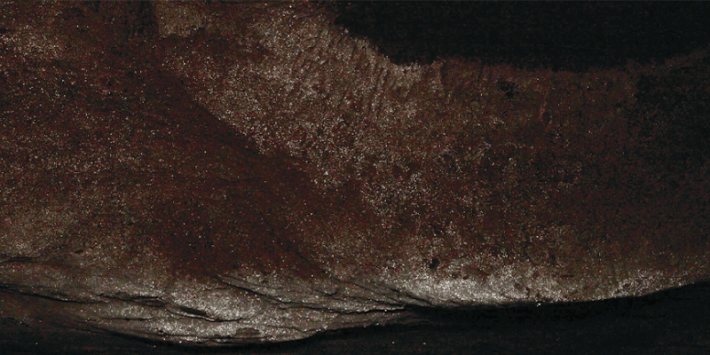

Deep within a limestone cave in the foothills of Australia’s Victorian Alps, the walls twinkle—and if you look closely, you can make out the movements of the ancestors of the Aboriginal GunaiKurnai people. Finger grooves on the walls of the cave, known to the GunaiKurnai Elders as Waribruk, allow us to trace their journeys through the darkness.
Until recently, it was tricky to study such finger flutings, which have been found in caves in Australia, Europe, and New Guinea. These markings tend to be shallow and non-pigmented, so they can be tough to glimpse and record. But recent innovations in photogrammetry—using software to piece together images into three-dimensional models—have enabled scientists to view these grooves in unprecedented detail.
The finger figures found in the Waribruk cave were made possible by the cave’s dough-like walls. As water seeped into the limestone over millions of years, it forged tunnels and left the walls soft and pliable. Bacteria living on some of the moist surfaces create microcrystals, giving them their glittery appearance.

SPECIAL SPARKLES: These microcrystals, created by bacteria on the cave’s walls, hold an important meaning in GunaiKurnai culture. Photo by GunaiKurnai Land and Waters Aboriginal Corporation.
All in all, 950 sets of finger grooves were found on or near glitter-covered walls deep in the cave, as noted by a team of international researchers led by the GunaiKurnai Land and Waters Aboriginal Corporation. They estimated the age of these impressions—between 8,400 and 1,800 years—thanks to tiny bits of charcoal and ash, findings recently reported in the journal Australian Archaeology. The charcoal and ash may be remnants left by firesticks used to guide people through the cave.
The positioning of some marks on a low ceiling in the cave suggests that people reached from a ledge while in all sorts of postures—crawling, sitting, and standing. In another spot, a set of markings appears to have been formed by a child, though the cave wall would have been beyond their reach. An adult might have held them up to touch the luminescent surface, according to the researchers.
But why are these prints confined to the glittery walls? The answer lies in GunaiKurnai knowledge: Caves are known to the community as “spirit-places” and were solely visited by mulla-mullung, medicine men and women who incorporated powdered minerals and crystals into their work. The mulla-mullung must have dragged their fingers along these glittering walls, the authors speculate, to connect with the power of the crystals, which is associated with the life force of the ancestors.
“Through these finger trails, we glimpse not only a physical act, but a cultural practice grounded in knowledge, memory, and spirituality,” the paper’s authors write for The Conversation. “A momentary movement, preserved in stone, connecting us to lives lived long ago.” 
Lead image: GunaiKurnai Land and Waters Aboriginal Corporation